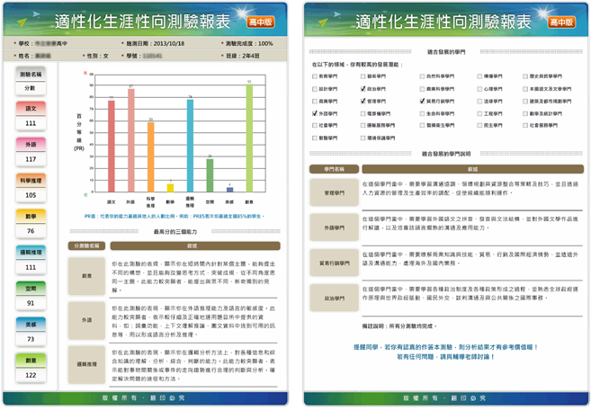
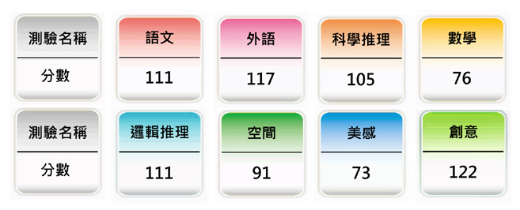
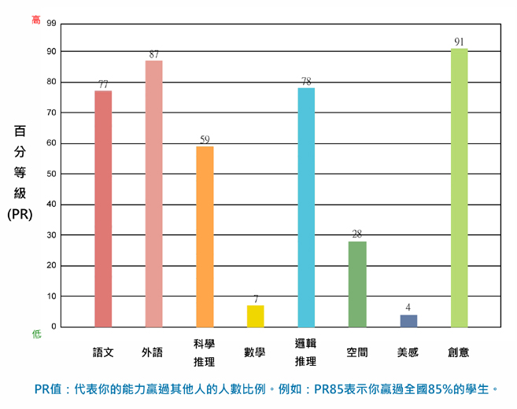
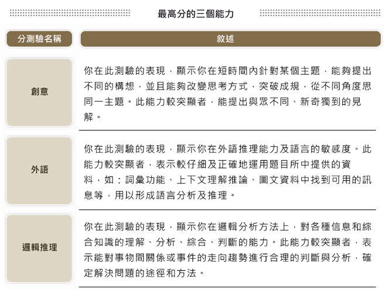
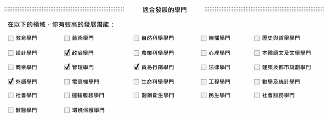

-
- 報表須知
- ●報表申請
1. 若您所安排之施測班級已完成測驗，請至[學生報表]>[報表申請與下載]頁面進行申請。
2. 學生報表於正式施測日之當學期內，必須提出申請，逾期則無法受理。
例如：若於上學期施測，則最後申請日為1月31日；若於下學期施測，則最後申請日為7月31日。
3. 申請成功之學生報表，自申請日之後的三個月內（含製表所需之一週作業時間），皆可自行於系統中下載使用， 逾期則系統將會自
動刪除報表檔案。
例如：民國100年7月31日當天提出申請，同年10月31日之前可於系統中下載學生報表檔案。
- ●報表資訊說明
本測驗根據試題反應理論(IRT)所獲得之能力，轉換供語文、外語、科學推理、數學、邏輯推理、空間、美感與創意測驗八種量尺分數，以及全國性常模資料(詳細常模資料請參考指導手冊)。 而長條圖以全國性常模資料呈現，並提供優勢能力的說明，將助於受試者瞭解其潛能，此為生涯輔導或生涯決策的重要參考資訊。 此外，有別於過去測驗結果的呈現，透過本測驗的相關算則與研究，提供大學學門適合度之建議，並提供適合發展學門的說明，以利於輔導教師在進行測驗解釋時能有更多的訊息。 下圖為本測驗結果報表及說明，請參閱。 - ●測驗分數
根據試題反應理論(IRT)所獲得之能力，轉換為平均數100、標準差15、總分140的量尺分數。 - ●長條圖
提供全國性常模，根據 PR 值繪製長條圖，以便於受試者瞭解自身之能力。 - ●優勢能力
根據 PR 值挑選出受試者最高的三項能力，並且提供能力說明。 - ●學門適合度建議
根據八個分測驗之結果，透過系統算則，進行大學 27 個學門適合度計算。挑選出 4 個適合度最高之學門發展建議。 - ●建議說明
根據適合發展的學門所勾選的內容，提供說明。




